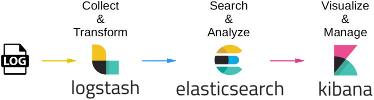
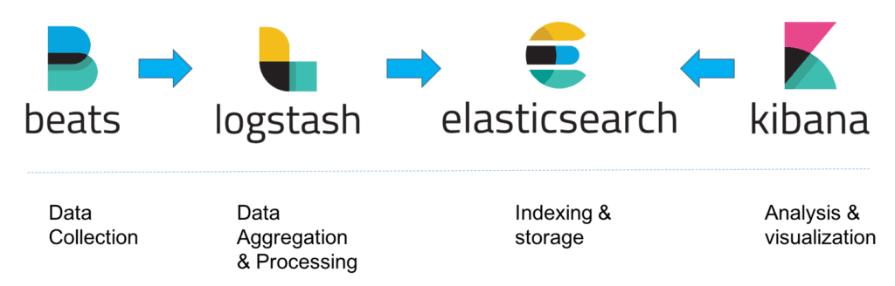
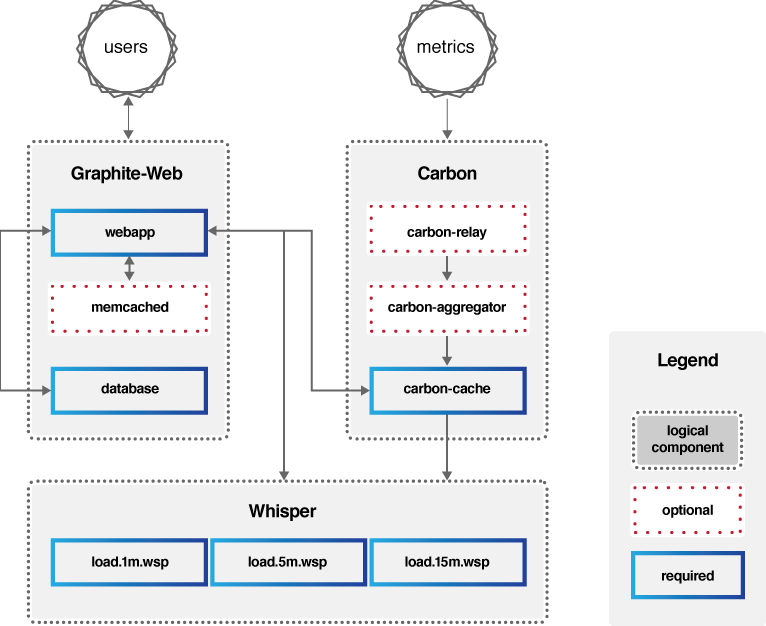
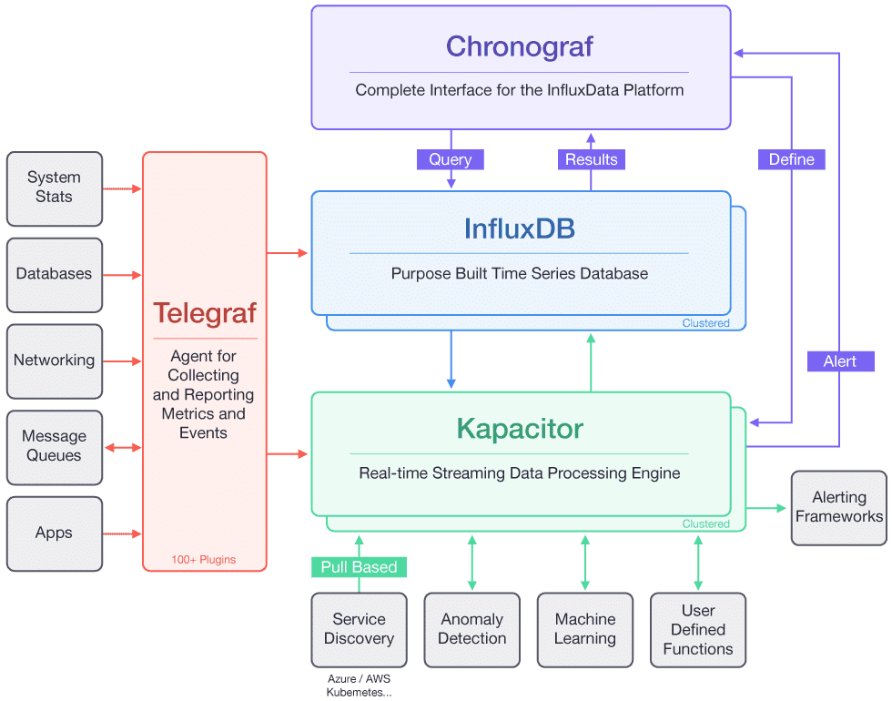
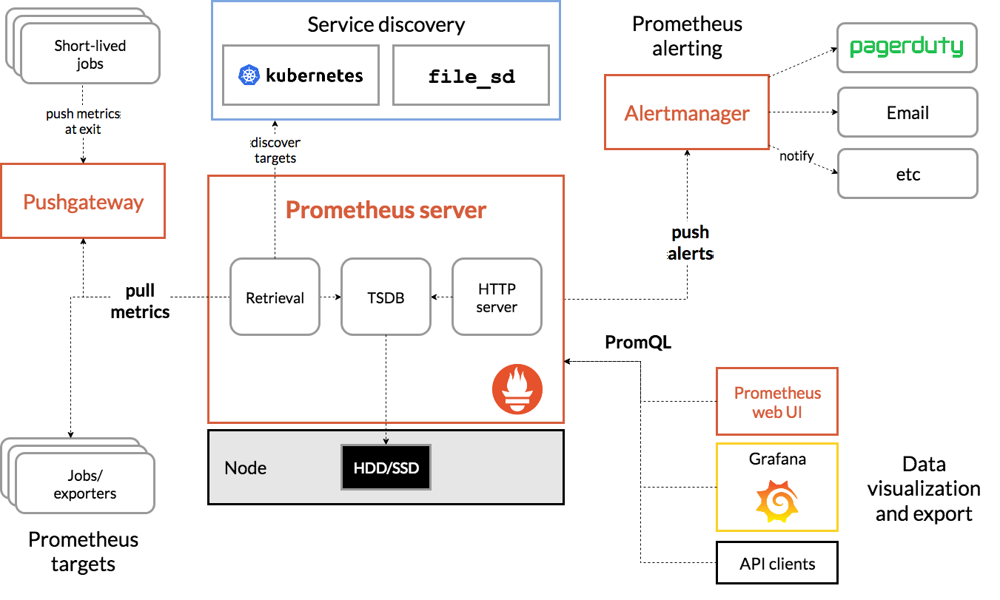

- 00 开篇词 微服务，从放弃到入门.md.html
- 01 到底什么是微服务？.md.html
- 02 从单体应用走向服务化.md.html
- 03 初探微服务架构.md.html
- 04 如何发布和引用服务？.md.html
- 05 如何注册和发现服务？.md.html
- 06 如何实现RPC远程服务调用？.md.html
- 07 如何监控微服务调用？.md.html
- 08 如何追踪微服务调用？.md.html
- 09 微服务治理的手段有哪些？.md.html
- 10 Dubbo框架里的微服务组件.md.html
- 11 服务发布和引用的实践.md.html
- 12 如何将注册中心落地？.md.html
- 13 开源服务注册中心如何选型？.md.html
- 14 开源RPC框架如何选型？.md.html
- 15 如何搭建一个可靠的监控系统？.md.html
- 16 如何搭建一套适合你的服务追踪系统？.md.html
- 17 如何识别服务节点是否存活？.md.html
- 18 如何使用负载均衡算法？.md.html
- 19 如何使用服务路由？.md.html
- 20 服务端出现故障时该如何应对？.md.html
- 21 服务调用失败时有哪些处理手段？.md.html
- 22 如何管理服务配置？.md.html
- 23 如何搭建微服务治理平台？.md.html
- 24 微服务架构该如何落地？.md.html
- 25 微服务为什么要容器化？.md.html
- 26 微服务容器化运维：镜像仓库和资源调度.md.html
- 27 微服务容器化运维：容器调度和服务编排.md.html
- 28 微服务容器化运维：微博容器运维平台DCP.md.html
- 29 微服务如何实现DevOps？.md.html
- 30 如何做好微服务容量规划？.md.html
- 31 微服务多机房部署实践.md.html
- 32 微服务混合云部署实践.md.html
- 33 下一代微服务架构Service Mesh.md.html
- 34 Istio：Service Mesh的代表产品.md.html
- 35 微博Service Mesh实践之路（上）.md.html
- 36 微博Service Mesh实践之路（下）.md.html
- 微博技术解密（上） 微博信息流是如何实现的？.md.html
- 微博技术解密（下）微博存储的那些事儿.md.html
- 结束语 微服务，从入门到精通.md.html
- 阿忠伯的特别放送 答疑解惑01.md.html
- 阿忠伯的特别放送 答疑解惑02.md.html
- 捐赠
15 如何搭建一个可靠的监控系统？
[专栏第7期]我给你讲解了监控系统的实现原理，先来简单回顾一下，一个监控系统的组成主要涉及四个环节：数据收集、数据传输、数据处理和数据展示。不同的监控系统实现方案，在这四个环节所使用的技术方案不同，适合的业务场景也不一样。
目前，比较流行的开源监控系统实现方案主要有两种：以ELK为代表的集中式日志解决方案，以及Graphite、TICK和Prometheus等为代表的时序数据库解决方案。接下来我就以这几个常见的监控系统实现方案，谈谈它们的实现原理，分别适用于什么场景，以及具体该如何做技术选型。
ELK
ELK是Elasticsearch、Logstash、Kibana三个开源软件产品首字母的缩写，它们三个通常配合使用，所以被称为ELK Stack，它的架构可以用下面的图片来描述。
- （图片来源：https://cdn-images-1.medium.com/max/1600/1*mwSvtVy_qGz0nTjaYbvwpw.png）
这三个软件的功能也各不相同。
Logstash负责数据收集和传输，它支持动态地从各种数据源收集数据，并对数据进行过滤、分析、格式化等，然后存储到指定的位置。
Elasticsearch负责数据处理，它是一个开源分布式搜索和分析引擎，具有可伸缩、高可靠和易管理等特点，基于Apache Lucene构建，能对大容量的数据进行接近实时的存储、搜索和分析操作，通常被用作基础搜索引擎。
Kibana负责数据展示，也是一个开源和免费的工具，通常和Elasticsearch搭配使用，对其中的数据进行搜索、分析并且以图表的方式展示。
这种架构因为需要在各个服务器上部署Logstash来从不同的数据源收集数据，所以比较消耗CPU和内存资源，容易造成服务器性能下降，因此后来又在Elasticsearch、Logstash、Kibana之外引入了Beats作为数据收集器。相比于Logstash，Beats所占系统的CPU和内存几乎可以忽略不计，可以安装在每台服务器上做轻量型代理，从成百上千或成千上万台机器向Logstash或者直接向Elasticsearch发送数据。
其中，Beats支持多种数据源，主要包括：
Packetbeat，用来收集网络流量数据。
Topbeat，用来收集系统、进程的CPU和内存使用情况等数据。
Filebeat，用来收集文件数据。
Winlogbeat，用来收集Windows事件日志收据。
Beats将收集到的数据发送到Logstash，经过Logstash解析、过滤后，再将数据发送到Elasticsearch，最后由Kibana展示，架构就变成下面这张图里描述的了。
- （图片来源：https://logz.io/wp-content/uploads/2018/08/image21-1024x328.png）
Graphite
Graphite的组成主要包括三部分：Carbon、Whisper、Graphite-Web，它的架构可以用下图来描述。
Carbon：主要作用是接收被监控节点的连接，收集各个指标的数据，将这些数据写入carbon-cache并最终持久化到Whisper存储文件中去。
Whisper：一个简单的时序数据库，主要作用是存储时间序列数据，可以按照不同的时间粒度来存储数据，比如1分钟1个点、5分钟1个点、15分钟1个点三个精度来存储监控数据。
Graphite-Web：一个Web App，其主要功能绘制报表与展示，即数据展示。为了保证Graphite-Web能及时绘制出图形，Carbon在将数据写入Whisper存储的同时，会在carbon-cache中同时写入一份数据，Graphite-Web会先查询carbon-cache，如果没有再查询Whisper存储。
- （图片来源：https://graphiteapp.org/img/architecture_diagram.png）
也就是说Carbon负责数据处理，Whisper负责数据存储，Graphite-Web负责数据展示，可见Graphite自身并不包含数据采集组件，但可以接入StatsD等开源数据采集组件来采集数据，再传送给Carbon。
其中Carbon对写入的数据格式有一定的要求，比如：
servers.www01.cpuUsage 42 1286269200
products.snake-oil.salesPerMinute 123 1286269200
[one minute passes]
servers.www01.cpuUsageUser 44 1286269260
products.snake-oil.salesPerMinute 119 1286269260
其中“servers.www01.cpuUsage 42 1286269200”是“key” + 空格分隔符 + “value + 时间戳”的数据格式，“servers.www01.cpuUsage”是以“.”分割的key，代表具体的路径信息，“42”是具体的值，“1286269200”是当前的Unix时间戳。
Graphite-Web对外提供了HTTP API可以查询某个key的数据以绘图展示，查询方式如下。
http://graphite.example.com/render?target=servers.www01.cpuUsage&
width=500&height=300&from=-24h
这个HTTP请求意思是查询key“servers.www01.cpuUsage”在过去24小时的数据，并且要求返回500*300大小的数据图。
除此之外，Graphite-Web还支持丰富的函数，比如：
target=sumSeries(products.*.salesPerMinute)
代表了查询匹配规则“products.*.salesPerMinute”的所有key的数据之和。
TICK
TICK是Telegraf、InfluxDB、Chronograf、Kapacitor四个软件首字母的缩写，是由InfluxData开发的一套开源监控工具栈，因此也叫作TICK Stack，它的架构可以看用下面这张图来描述。
- （图片来源：https://2bjee8bvp8y263sjpl3xui1a-wpengine.netdna-ssl.com/wp-content/uploads/Tick-Stack-Complete.png）
从这张图可以看出，其中Telegraf负责数据收集，InfluxDB负责数据存储，Chronograf负责数据展示，Kapacitor负责数据告警。
这里面，InfluxDB对写入的数据格式要求如下。
<measurement>[,<tag-key>=<tag-value>...] <field-key>=<field-value>[,<field2-key>=<field2-value>...] [unix-nano-timestamp]
下面我用一个具体示例来说明它的格式。
cpu,host=serverA,region=us_west value=0.64 1434067467100293230
其中，“cpu,host=serverA,region=us_west value=0.64 1434067467100293230”代表了host为serverA、region为us_west的服务器CPU的值是0.64，时间戳是1434067467100293230，时间精确到nano。
Prometheus
还有一种比较有名的时间序数据库解决方案Prometheus，它是一套开源的系统监控报警框架，受Google的集群监控系统Borgmon启发，由工作在SoundCloud的Google前员工在2012年创建，后来作为社区开源项目进行开发，并于2015年正式发布，2016年正式加入CNCF（Cloud Native Computing Foundation），成为受欢迎程度仅次于Kubernetes的项目，它的架构可以用下图来描述。
- （图片来源：https://prometheus.io/assets/architecture.png）
从这张图可以看出，Prometheus主要包含下面几个组件：
Prometheus Server：用于拉取metrics信息并将数据存储在时间序列数据库。
Jobs/exporters：用于暴露已有的第三方服务的metrics给Prometheus Server，比如StatsD、Graphite等，负责数据收集。
Pushgateway：主要用于短期jobs，由于这类jobs存在时间短，可能在Prometheus Server来拉取metrics信息之前就消失了，所以这类的jobs可以直接向Prometheus Server推送它们的metrics信息。
Alertmanager：用于数据报警。
Prometheus web UI：负责数据展示。
它的工作流程大致是：
Prometheus Server定期从配置好的jobs或者exporters中拉取metrics信息，或者接收来自Pushgateway发过来的metrics信息。
Prometheus Server把收集到的metrics信息存储到时间序列数据库中，并运行已经定义好的alert.rules，向Alertmanager推送警报。
Alertmanager根据配置文件，对接收的警报进行处理，发出告警。
通过Prometheus web UI进行可视化展示。
Prometheus存储数据也是用的时间序列数据库，格式如下。
<metric name>{<label name>=<label value>, …}
比如下面这段代码代表了位于集群cluster 1上，节点IP为1.1.1.1，端口为80，访问路径为“/a”的http请求的总数为100。
http_requests_total{instance="1.1.1.1:80",job="cluster1",location="/a"} 100
讲到这里，四种监控系统的解决方案都已经介绍完了，接下来我们对比一下这四种方案，看看如何选型。
选型对比
我们从监控系统的四个环节来分别对比。
1. 数据收集
ELK是通过在每台服务器上部署Beats代理来采集数据；Graphite本身没有收据采集组件，需要配合使用开源收据采集组件，比如StatsD；TICK使用了Telegraf作为数据采集组件；Prometheus通过jobs/exporters组件来获取StatsD等采集过来的metrics信息。
2. 数据传输
ELK是Beats采集的数据传输给Logstash，经过Logstash清洗后再传输给Elasticsearch；Graphite是通过第三方采集组件采集的数据，传输给Carbon；TICK是Telegraf采集的数据，传输给InfluxDB；而Prometheus是Prometheus Server隔一段时间定期去从jobs/exporters拉取数据。可见前三种都是采用“推数据”的方式，而Prometheus是采取拉数据的方式，因此Prometheus的解决方案对服务端的侵入最小，不需要在服务端部署数据采集代理。
3. 数据处理
ELK可以对日志的任意字段索引，适合多维度的数据查询，在存储时间序列数据方面与时间序列数据库相比会有额外的性能和存储开销。除此之外，时间序列数据库的几种解决方案都支持多种功能的数据查询处理，功能也更强大。
Graphite通过Graphite-Web支持正则表达式匹配、sumSeries求和、alias给监控项重新命名等函数功能，同时还支持这些功能的组合，比如下面这个表达式的意思是，要查询所有匹配路径“stats.open.profile.*.API._comments_flow”的监控项之和，并且把监控项重命名为Total QPS。
alias(sumSeries(stats.openapi.profile.*.API._comments_flow.total_count,“Total QPS”)
InfluxDB通过类似SQL语言的InfluxQL，能对监控数据进行复杂操作，比如查询一分钟CPU的使用率，用InfluxDB实现的示例是：
SELECT 100 - usage_idel FROM “autogen”.“cpu” WHERE time > now() - 1m and “cpu”=‘cpu0’
Prometheus通过私有的PromQL查询语言，如果要和上面InfluxDB实现同样的功能，PromQL语句如下，看起来更加简洁。
100 - (node_cpu{job=“node”,mode=“idle”}[1m])
4. 数据展示
Graphite、TICK和Prometheus自带的展示功能都比较弱，界面也不好看，不过好在它们都支持Grafana来做数据展示。Grafana是一个开源的仪表盘工具，它支持多种数据源比如Graphite、InfluxDB、Prometheus以及Elasticsearch等。ELK采用了Kibana做数据展示，Kibana包含的数据展示功能比较强大，但只支持Elasticsearch，而且界面展示UI效果不如Grafana美观。
总结
以上几种监控系统实现方式，所采用的技术均为开源的，其中：
ELK的技术栈比较成熟，应用范围也比较广，除了可用作监控系统外，还可以用作日志查询和分析。
Graphite是基于时间序列数据库存储的监控系统，并且提供了功能强大的各种聚合函数比如sum、average、top5等可用于监控分析，而且对外提供了API也可以接入其他图形化监控系统如Grafana。
TICK的核心在于其时间序列数据库InfluxDB的存储功能强大，且支持类似SQL语言的复杂数据处理操作。
Prometheus的独特之处在于它采用了拉数据的方式，对业务影响较小，同时也采用了时间序列数据库存储，而且支持独有的PromQL查询语言，功能强大而且简洁。
从对实时性要求角度考虑，时间序列数据库的实时性要好于ELK，通常可以做到10s级别内的延迟，如果对实时性敏感的话，建议选择时间序列数据库解决方案。
从使用的灵活性角度考虑，几种时间序列数据库的监控处理功能都要比ELK更加丰富，使用更灵活也更现代化。
所以如果要搭建一套新的监控系统，我建议可以考虑采用Graphite、TICK或者Prometheus其中之一。不过Graphite还需要搭配数据采集系统比如StatsD或者Collectd使用，而且界面展示建议使用Grafana接入Graphite的数据源，它的效果要比Graphite Web本身提供的界面美观很多。TICK提供了完整的监控系统框架，包括从数据采集、数据传输、数据处理再到数据展示，不过在数据展示方面同样也建议用Grafana替换掉TICK默认的数据展示组件Chronograf，这样展示效果更好。Prometheus因为采用拉数据的方式，所以对业务的侵入性最小，比较适合Docker封装好的云原生应用，比如Kubernetes默认就采用了Prometheus作为监控系统。
思考题
通过我今天的讲解，你应该知道了Graphite、TICK以及Prometheus存储监控数据都采用了时间序列数据库，它们在存储和性能上有什么不同之处吗？
欢迎你在留言区写下自己的思考，与我一起讨论。
© 2019 - 2023 Liangliang Lee. Powered by gin and hexo-theme-book.